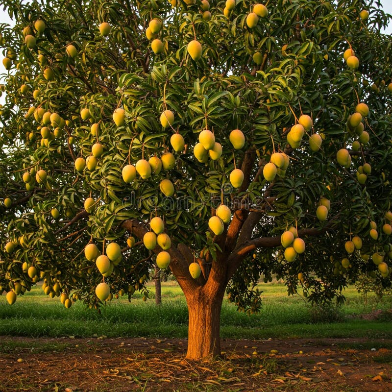

About Mango Tree
A mango tree is a large, evergreen tree of the cashew family, native to South Asia, that is grown for its fruit. It can reach heights of up to 100 feet, has a thick trunk, and a dense, rounded canopy of glossy, dark green leaves that are reddish-pink when young. The tree produces clusters of fragrant, creamy-pink flowers and the fruit is a stone fruit with sweet, orange-yellow flesh.
Uses of mango Tree:
- Fruit Eaten fresh, used in juices, chutneys, pickles, and jams.
- Leaves Used in traditional medicine (e.g., for diabetes), as a decoration for festivals, and dried to make a nutritional tea.
- Wood Used to make furniture, boxes, and musical instruments like ukuleles. It is also used to make plywood.
- Seed The oil from the seed can be used as a moisturizer for dry skin or hair, and for hair fall and grey hair.
Picture of Mango Tree:
Care of Mango tree
Sunlight: Mango trees need at least 6–8 hours of direct sunlight daily for optimal fruit production.
Soil: Plant in well-draining, loamy soil that is slightly acidic to slightly alkaline (pH 5.5-7.5). Improve drainage by mixing in compost or other organic matter.
Protection: Protect young trees from strong winds by staking them.
Watering
Young trees: Water young trees frequently to help them establish their root systems. You can start with watering every other day and gradually increase to once or twice a week.Established trees: Water deeply but infrequently, allowing the top few inches of soil to dry out before watering again.
Before flowering: Withhold irrigation for about two months before flowering and resume once fruits begin to form.
Container-grown trees: A moisture meter can help determine when to water.
Fertilization and mulching Fertilization
Fertilizer: Use a slow-release, balanced fertilizer sparingly, following the product's instructions. A good time to fertilize is during key growth periods.Mulch: Apply a layer of organic mulch around the base of the tree to retain moisture, but keep it a few inches away from the trunk. ⬅ Back to Home